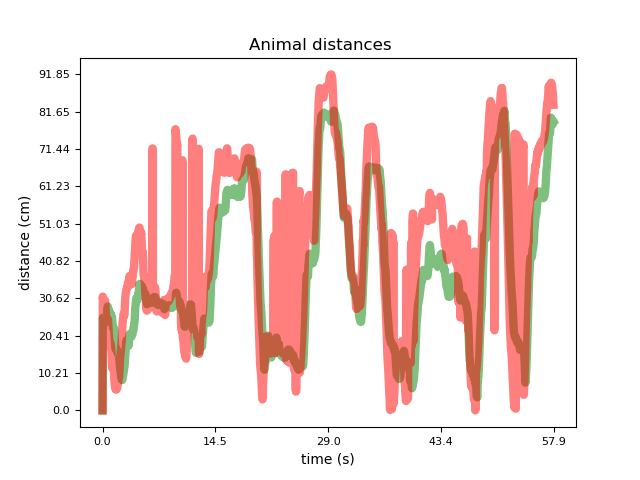
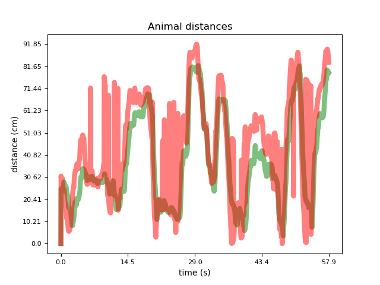
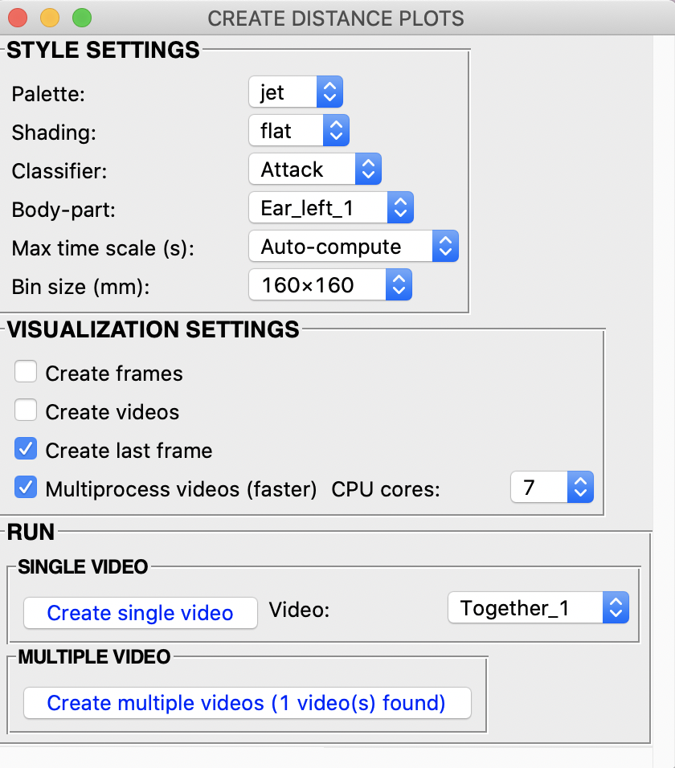
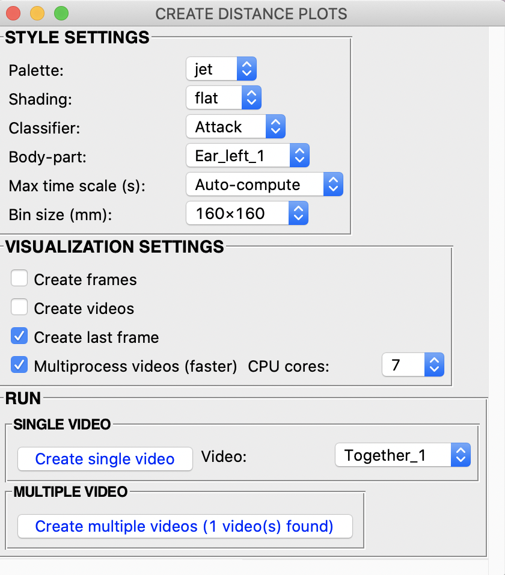

Scenario 2 walkthrough
To faciliate the initial use of SimBA, we provide several use scenarios. We have created these scenarios around a hypothetical experiment that take a user from initial use (completely new start) all the way through analyzing a complete experiment and then adding additional experimental datasets to an initial project.
All scenarios assume that the videos have been pre-processed and that DLC behavioral tracking CSV dataframes have been created.
Hypothetical Experiment:
Three days of resident-intruder testing between aggressive CD-1 mice and subordinante C57 intruders. Each day of testing has 10 pairs of mice, for a total of 30 videos recorded across 3 days. Recordings are 3 minutes in duration, in color, at 30fps.
Scenario 2: Using a classifier on new experimental data…
In this scenario you have either are now ready to do one of two things.
You have generated a classifier yourself which performance you are happy with. For example, you have followed Scenario 1, and generated the classifier for “Behavior that Will Get a Nature Paper (Behavior BtWGaNP)” and its working well.
Or, you have received a behavioral classifier generated somewhere else, and now you want to use the classifier to score Behavior BtWGaNP on your experimental videos. For example, you have downloaded the classifier from our OSF repository.
Part 1: ‘Clean up your project’, or create a new project.
We will need start with a project directory tree that does not contain
any other data than the data we want to analyze. If you are coming along
from Scenario
1,
you will have a project tree already. However, this project tree
contains the files used to create the BtWGaNP classifier: if you look in
the subdirectories of the project_folder/csv/input directory, you
will see the 19 CSV files we used to generate the project. If we
continue using this project, SimBA will see these CSV files and analyze
these files in addition to your Experimental data. Thus, one option is
to manually remove these files from the subdirectories of our project
(see the legacy tutorial for Scenario
4
where we take this approach), or you could use the
Archive Processed files function in the Load Project tab
described in the new Scenario 4
tutorial
and shown in the image below.

Another alternative is to create a new project that only contains the data from our Experiment. In this Scenario, we will create a new project.
Go ahead and create a new project with your experimental data, follow the instructions for creating a new project in either of these tutorials: 1, 2. Instead of using your pilot data as indicated in the tutorial from Scenario 1, use the data and videos for the experiment you want to analyze.
Note
In the final Step 4 of the tutorial for creating a new project, we extract the frames from the imported videos. Having the frames is only necessery if you wish to visualize the predictive classifications generated in this current Scenario 2. If you do not want to visualize the machine predictions you can skip this step. However, we recommend that you at least visualize the machine predictions using one or a few videos to gauge its performance. How to visualize the machine predictions is described in Part 5 of this tutorial.
Part 2: Load project and process your tracking data
In Part 1 above, we created a project that contains your experimental data. To continue working with this project, we must load it. To load the project and process your experimental data, follow the instructions for Step 1 to 5 in either the Scenario 1 tutorial or Part I of the generic tutorial.
In this current Scenario 2, you can ignore Steps 6-7 of the tutorials, which deals with annotating data and creating classifiers.
However, Step 1-5 of the Scenario 1 tutorial, which we need to complete, performs outlier correction in the tracking and extracts features, which we will need to do before analyzing our experimental data.
Part 3: Run the classifier on new data
At this point we have Experimental data, which has been corrected for outliers and with features extracted, and we want to predict behavior BtWGaNP in these videos.
Note
If you haven’t generated the predictive classifier yourself, and you have instead downloaded the predictive classifier or been given the predictive calssifier by someone else, we will also include information on how you can use that classifier to predict behaviors in your videos.
In the Load Project menu, navigate to the Run Machine Model tab and you should see the following window.
{kind=link}
Click on
Model Selection. The following window, containing the classifier names that were defined when you created the project, will pop up. The image below depicts a full suite of behavioral predictive classifiers relevant to aggression behavior, but yours should only show Behavior BtWGaNP.

Click on
Browse Fileand select the model (.sav) file associated with the classifier name. If you are following along from Scenario 1, the .sav file will be saved in your earlier project, in theproject_folder\models\generated_modelsdirectory or theproject_folder\models\validation\model_filesdirectory. You can also select an .sav file located in any other directory. For example, if you have downloaded a random forest model from our OSF repository, you can specify the path to that file here.
Once the path has been selected, go ahead and modify the discrimination
Threshold and Minimum Bout for each classifier separately. If
you want to explore the optimal threshold for your classifier, go ahead
and read Scenario 1 - Critical validation step before running machine
model on new
data
on how to use the Validate Model on Single Video menu (this
information is also repeated in brief in Step 4 below). The
Threshold entry box accepts a value between 0 and 1. The
Minimum Bout is a time value in milliseconds that represents the
minimum length of a classified behavioral bout. To read more about the
Minimum Bout - go ahead and read Scenario 1 - Critical validation
step before running machine model on new
data(this
information is also repeated in brief in Step 4 below).
Note
In the real world you may want want to run mutiple
classifiers on each video, one for each of the behaviors you are
intrested in. In such a scenario you have defined mutiple
predictive calssifier names when you created the project in Step 1.
Each one will be displayed in the Model Selection, and you can
specify a different path to a different .sav file for each of them.
Note
Each random forest expects a specific number of features. The number of calculated features is determined by the number of body-parts tracked in pose-estimation in DeepLabCut or DeepPoseKit. For example: if the input dataset contains the coordinates of three body parts, then a fewer number of features can be calculated than if 8 body parts were tracked. This means that you will get an error if you run a random forest model .sav file that has been generated using 8 body parts on a new dataset that contains only 3 body parts.
Fill in the
Discrimination thresholdand click onSetto save the settings.
Discrimination threshold: This value represents the level of probability required to define that the frame belongs to the target class and it accepts a float value between 0.0 and 1.0. In other words, how certain does the computer have to be that behavior BtWGaNP occurs in a frame, in order for the frame to be classified as containing behavior BtWGaNP? For example, if the discrimination theshold is set to 0.50, then all frames with a probability of containing the behavior of 0.5 or above will be classified as containing the behavior. For more information on classification theshold, click here.
Note
You can titrate the discrimination threshold to best fit your data. Decreasing the threshold will predict that the classified behavior is more frequent, while increasing the threshold will predict that the behaviors as less frequent.
Fill in the
Minimum behavior bout lengthand click onSetto save the settings.
Minimum behavior bout length (ms): This value represents the minimum length of a classified behavioral bout. Example: The random forest makes the following predictions for behavior BtWGaNP over 9 consecutive frames in a 50 fps video: 1,1,1,1,0,1,1,1,1. This would mean, if we don’t have a minimum bout length, that the animals enganged in behavior BtWGaNP for 80ms (4 frames), took a break for 20ms (1 frame), then again enganged in behavior BtWGaNP for another 80ms (4 frames). You may want to classify this as a single 180ms behavior BtWGaNP bout, rather than two separate 80ms BtWGaNP bouts. If the minimum behavior bout length is set to 20, any interruption in the behavior that is 20ms or shorter will be removed and the example behavioral sequence above will be re-classified as: 1,1,1,1,1,1,1,1,1 - and instead classified as a single 180ms BtWGaNP bout. If your videos in your project are recorded at different frame rates then SimBA will account for this when correcting for theMinimum behavior bout length.
Click on
Run RF Modelto run the machine model on the new experimental data. You can follow the progress in the main SimBA terminal window. A message will be printed once all the behaviors have been predicted in the experimental videos. New CSV files, that contain the predictions together with the features and pose-estimation data, are saved in theproject_folder/csv/machine_resultsdirectory.
Part 4: Analyze Machine Results
Once the classifications have been generated, we may want to analyze
descriptive statistics for the behavioral predictions. For example, we
might like to know how much time the animals in each video enganged in
behavior BtWGaNP, how long it took for each animal to start enganging in
behavior BtWGaNP, how many bouts of behavior BtWGaNP did occur in each
video, and what where the mean/median interval and bout length for
behavior BtWGaNP. We may also want some descriptive statistics on the
movements, distances and velocities of the animals. If applicable, we
can also generate an index on how ‘severe’ behavior BtWGaNP was, and/or
split the different classification and movement statistics into
time-bins. To generate such descriptive statistics summaries, click on
the Run machine model tab in the Load project menu. In the
sub-menu Analyze machine results, you should see the following
buttons:
{kind=link}
ANALYZE MACHINE PREDICTIONS: AGGREGATES: This button generates descriptive statistics for each predictive classifier in the project, including the total time, the number of frames, total number of ‘bouts’, mean and median bout interval, time to first occurrence, and mean and median interval between each bout. Clicking the button will display a pop up window with tick-boxes for the different metric options, and the user ticks the metrics that the output file should contain. The pop up window should look like this:
{kind=link}
Clicking on RUN runs the selected desciptive statistics on all the
files in project_folder/csv/machine_results directory. A date-time
stamped output csv file with the data is saved within the
/project_folder/log folder. Check the main SimBA terminal window for
the exact output filename and file path.
ANALYZE DISTANCES / VELOCITY: AGGREGATES: This button generates descriptive statistics for distances and velocities. Clicking the button will display a pop-up window where the user selects how many animal, and which body-parts, the user wants to use to calculate the distance and velocity metrics. The pop up window should look like this:

Clicking the Run buttons calculates the descriptive statistics on
all the CSV files in project_folder/csv/machine_results directory. A
date-time stamped output csv file with the data is saved in the
/project_folder/log folder.
Note
When clicking the Body-part dropdown in the
ANALYZE DISTANCES / VELOCITY: AGGREGATES pop-up menu, you should
see all the body-parts available in your project. You should also see
options with the suffix CENTER OF GRAVITY, e.g., an option may be
named Animal 1 CENTER OF GRAVITY. If you use this option, SimBA
will estimate the centroid of the choosen animal and compute the
moved distance and the velocity based on the estimated centroid.
ANALYZE MACHINE PREDICTIONS: TIME BINS: Use this menu to compute descriptive statistics of classification within user-defined time-bins. This menu looks very similar to the menu used for aggregate machine classification computations, but has one additional entry-box at the bottom. In this bottom entry-box, enter the size of your time-bins in seconds.
{kind=link}
Note
(i) If no behavior was expressed in a certain time bin, then
the fields representing that time bin is missing. (ii) If there was 1
behavior event within a time bin, then the
Mean event interval (s) and Median event interval (s) fields
are missing for that time-bin.
ANALYZE DISTANCES / VELOCITY: TIME-BINS: This button generates descriptive statistics for movements, velocities, and distances between animals in user-defined time-bins. Clicking this button brings up a pop-up menu very similar to theANALYZE DISTANCES / VELOCITY: AGGREGATES, but has one additional entry-box at the bottom. In this bottom entry-box, enter the size of your time-bins in seconds. It also has a checkbox namedCreate plots. If theCreate plotscheckbox is ticked, SimBA will generate line plots, with one line plot per videos, representing the movement of your animals in the defined time-bins.
{kind=link}
ANALYZE MACHINE PREDICTIONS: BY ROI: If you have drawn user-defined ROIs, then we can compute how much time, and how many classified behavioral bout started and ended in each user-defined ROI. Clicking on theClassifications by ROIbrings up the following pop-up:

In this pop-up. Tick the checkboxes for which classified behaviors and
ROIs you wish to analyze. Also tick the buttons for which measurements
you want aggregate statistics for. In the Select body-part drop-down
menu, select the body-part you shich to use as a proxy for the location
of the behavior. Once filled in, click
Analyze classifications in each ROI. An output data file will be
saved in the project_folder/logs directory of your SimBA project.
Analyze machine predictions: by severity: This type of analysis is only relevant if your behavior can be graded on a scale ranging from mild (the behavior occurs in the presence of very little body part movements) to severe (the behavior occurs in the presence of a lot of body part movements). For instance, attacks could be graded this way, with ‘mild’ or ‘moderate’ attacks happening when the animals aren’t moving as much as they are in other parts of the video, while ‘severe’ attacks occur when both animals are tussling at full force. This button and code calculates the ‘severity’ of each frame classified as containing the behavior based on a user-defined scale. Clicking the severity button brings up the following menu:

Classifier dropdown: Select which classifier you want to calculate severity scores for.
Brackets dropdown: Select the size of the severity scale. E.g., select 10 if you want to score your classifications on a 10-point scale.
Animals dropdown: Select which animals body-parts you want to use to calculate the movement. E.g., select
ALL ANIMALSto calculate the movement based on all animals and their body-parts.FRAME COUNT checkbox: Check this box to get the results presented as number of frames in each severity bracket.
SECONDS checkbox: Check this box to get the results presented as number of seconds in each severity bracket.
Click on RUN SEVERITY ANALYSIS. You can follow progress in the main
SimBA terminal. The results are saved in the project_folder/logs/
directory of your SimBA project. You can found an expected output of
this analysis
HERE
Congrats! You have now used machine models to classify behaviors in new data. To visualize the machine predictions by rendering images and videos with the behavioral predictions overlaid, and plots describing on-going behaviors and bouts, proceed to Part 5 of the current tutorial.
Part 5: VISUALIZING RESULTS
In this part of the tutorial we will create visualizations of machine learning classifications and the features which you have generated. This includes images and videos of the animals with prediction overlays, gantt plots, line plots, paths plots, heat maps and data plot etc. These visualizations can help us understand the classifier(s), behaviors, and differences between experimental groups.
To access the visualization functions, click the [Visualizations]
tab.
VISUALIZING CLASSIFICATIONS
On the left of the Visualization tab menu, there is a sub-menu with
the heading DATA VISUALIZATION with a button named
VISUALIZE CLASSIFICATIONS. Use this button to create videos with
classification visualization overlays, similar to what is presented
HERE. Clicking this button brings up
the below pop-up menu allowing customization of the videos and how they
are created. We will go through each of the settings in the
visualization options in turn:

BODY-PART VISUALIZATION THRESHOLD (0.0-1.0): In this entry-box, enter the minimum pose-estimation detection probability threshold required for the body-part to be included in the visualization. For example, enter
0.0for all body-part predictions to be included in teh visualization. Enter1.0for only body-parts detected with 100% certainty to be visualized.STYLE SETTINGS: By default, SimBA will auto-compute suitable visualization (i) font sizes, (ii) spacing between text rows, (iii) font thickness, and (iv) pose-estimation body-part location circles which depend on the resolution of your videos. If you do not want SimBA to auto-compute these attributes, go ahead and and un-tick the `Auto-compute font/key-point sizes checkbox, and fill in these values manually in each entry box.
VISUALIZATION SETTINGS:
Create video: Tick the
Create videocheckbox to generate.mp4videos with classification result overlays.Create frames: Tick the
Create framescheckbox to generate.pngfiles with classification result overlays (NOTE: this will create one png file for each frame in each video. If you are concerned about storage, leave this checkbox unchecked).Include timers overlay: Tick the
Include timers overlaycheckbox to insert the cumulative time in seconds each classified behavior has occured in the top left corner of the video.Rotate video 90°: Tick the
Rotate video 90°checkbox to rotate the output video 90 degrees clockwise relative to the input video.Multiprocess videos (faster): Creating videos can be computationally costly, and creating many, long, videos can come with unacceptable run-times. We can solve this using multiprocessing over multiple cores on your computer. To use multi-processing, tick the
Multiprocess videos (faster)checkbox. Once ticked, theCPU coresdropdown becomes enabled. This dropdown contains values between2and the number of cores available on your computer with fancier computers having higher CPU counts. In this dropdown, select the number of cores you want to use to create your visualizations.
RUN:
SINGLE VIDEO: To create classification visualizations for a single video, select the video in the
Videodrop-down menu and click theCreate single videobutton. You can follow the progress in the main SimBA terminal. The results will be stored in theproject_folder/frames/output/sklearn_resultsdirectory of your SimBA project.MULTIPLE VIDEO: To create classification visualizations for all videos in your project, click the
Create multiple videosbutton. You can follow the progress in the main SimBA terminal. The results will be stored in theproject_folder/frames/output/sklearn_resultsdirectory of your SimBA project.
VISUALIZING GANTT CHARTS
Clicking the VUSIALIZE GANTT button brings up a pop-up menu allowing
us to customize gantt charts. Gantt charts are broken horizontal bar
charts allowing us to insepct when and for how long each of our
classified behaviors occur as in the gif below.


STYLE SETTINGS: Use this menu to specify the resultion of the Gantt plot videos and/or frames. Furthermore, use the
Font sizeentry box to specify the size of the y- and x-axis label text sizes. Use theFont rotation degreeentry-box to specify the rotation of the y-axis classifier names (set to45by default which is what is visualized in the gif above).VISUALIZATION SETTINGS:
Create video: Tick the
Create videocheckbox to generate gantt plots.mp4videos.Create frames: Tick the
Create framescheckbox to generate gantt plots.pngfiles (NOTE: this will create one png file for each frame in each video. If you are concerned about storage, leave this checkbox unchecked).Create last frame: Tick the
Create last framecheckbox to generate a gantt plots.pngfile representing the entire video.Multiprocess videos (faster): Creating gantt videos and/or images can be computationally costly, and creating many, long, videos can come with unacceptable run-times. We can solve this using multiprocessing over multiple cores on your computer. To use multi-processing, tick the
Multiprocess videos (faster)checkbox. Once ticked, theCPU coresdropdown becomes enabled. This dropdown contains values between2and the number of cores available on your computer, with fancier computers having higher CPU counts. In this dropdown, select the number of cores you want to use to create your gantt charts.
RUN:
SINGLE VIDEO: To create gantt chart visualizations for a single video, select the video in the
Videodrop-down menu and click theCreate single videobutton. You can follow the progress in the main SimBA terminal. The results will be stored in theproject_folder/frames/output/sklearn_resultsdirectory of your SimBA project.MULTIPLE VIDEO: To create gantt chart visualizations for all videos in your project, click the
Create multiple videosbutton. You can follow the progress in the main SimBA terminal. The results will be stored in theproject_folder/frames/output/sklearn_resultsdirectory of your SimBA project.
Note
If you’d like to create a gif from the gantt frames, you can do so by using the SimBA tools menu and the Generate gifs tool.
VISUALIZING CLASSIFICATION PROBABILITIES
SimBA can create line plots depicting the classification probability
that a specific behavior is occuring in the current frame across the
video. On the left of the Visualization menu, a button named
VISUALIZE PROBABILITIES. Clicking this button brings up the below
sub-menu allowing users to customize the videos and how they are
created.


STYLE SETTINGS: Use this menu to specify the resultion of the probability plot videos and/or frames.
RESOLUTION: Use this dropdown to select the resolution (size) of the output video and/or output frames.
LINE COLOR: Use this dropdown to specify the color of the line in the charts.
FONT SIZE: In this entry-box, enter the font size of the y- and x-axis labels and tick labels. (e.g.,
10)LINE WIDTH: In this entry-box, enter the thickness of the line in the chart (e.g.,
6).CIRCLE SIZE: In this entry-box, enter the size of the circle representing the current frame probability value (e.g.,
20)
VISUALIZATION SETTINGS:
CLASSIFIER: Use this drop down menu to select the classifier you which to create the line plot for.
CREATE FRAMES: Tick the
Create framescheckbox to create probability plots.pngfiles (NOTE: this will create one png file for each frame in each video. If you are concerned about storage, leave this checkbox unchecked).CREATE VIDEOS: Tick the
Create videocheckbox to create probability plots.mp4videos.Multiprocess videos (faster): Creating probability videos and/or images can be computationally costly, and creating many, long, videos can come with unacceptable run-times. We can solve this using multiprocessing over multiple cores on your computer. To use multi-processing, tick the
Multiprocess videos (faster)checkbox. Once ticked, theCPU coresdropdown becomes enabled. This dropdown contains values between2and the number of cores available on your computer, with fancier computers having higher CPU counts. In this dropdown, select the number of cores you want to use to create your probability charts.
RUN:
SINGLE VIDEO: To create probability chart visualizations for a single video, select the video in the
Videodrop-down menu and click theCreate single videobutton. You can follow the progress in the main SimBA terminal. The results will be stored in theproject_folder/frames/output/probability_plotsdirectory of your SimBA project.MULTIPLE VIDEO: To create probability chart visualizations for all videos in your project, click the
Create multiple videosbutton. You can follow the progress in the main SimBA terminal. The results will be stored in theproject_folder/frames/output/probability_plotsdirectory of your SimBA project.
Note
If you’d like to create a gif from the probability_plots frames, you can do so by using the SimBA tools menu and the Generate gifs tool.
VISUALIZING PATH PLOTS
SimBA can create path plots depicting the location of the animal(s), their paths, as well the locations of the classified behaviors. In the [Visualizations] tab, click the [VISUALIZE PATHS] button, which brings up the below pop-up menu.


STYLE SETTINGS:
AUTO-COMPUTE STYLES: By default, SimBA will auto-compute suitable visualization styles which depend on the resolution of your videos. If you do not want SimBA to auto-compute these attributes, go ahead and and un-tick the
Auto-compute stylescheckbox, and fill in these values manually in each entry box.MAX PRIOR LINES (int): Number of milliseconds for which the movement path is diplayed. E.g., a value of
2000will display the movement path for the most recent 2s.LINE WIDTH (int): The width of the lines representing the movement path. E.g.,
6.CIRCLE SIZE (int): The size of the circle representing the animals current location. E.g.,
20.FONT SIZE: The size of the font text of the animals name.
E.g., 3.FONT THICKNESS: The thickness (boldness) of the font text of the animals name.
E.g., 2.BACKGROUND COLOR: The background color of the path plots. E.g.,
White.
CHOOSE CLASSIFICATION VISUALIZATION: Use this menu to specify if and how the location of classified events are printed on the path plots.
INCLUDE CLASSIFICATION LOCATIONS: Check this box to include the location of classified events in the path plot.
You should see a row for each classifier, and three drop-down menues for each classifier. In the example screengrab above, I have two classifiers (Classifier 1: Attack, Classifier 2: Sniffing). In the second drop-down, select which color the circles depicting the location of the classified events should have. In the third dropdown, select the size the circles depicting the location of the classified events should have.
Note: The classified event location will be inferred to be in the first animals body-part location
CHOOSE BODY-PARTS: Use this menu to specify which body-parts of the animals will represent their location.
# ANIMALS: Use this drop-down to specify how many animals you want to visualize paths for.
You should see a row for each animal, and two drop-down menues per. In the example screengrab above, I have two animals. In the first drop-down, select the body-part which you want to represent the path. In the second drop-down, select which color the circles and lines depicting the location of the animal should have.
RUN:
SINGLE VIDEO: Use this menu to create a single path visualization video. The
Videodrop-down will contain all the videos in yourproject_folder/machine_resultsdirectory. Choose which video you want to create a path visualization for. Once choosen, click theCreate single videobutton. You can follow the progress in the main SimBA terminal window. Once complete, a new video and/or frames will be saved in theproject_folder/frames/output/path_plotsdirectory.MULTIPLE VIDEO: Use this menu to create a path visualization video for every video in your project. After clicking the
Create multiple videosbutton. You can follow the progress in the main SimBA terminal window. Once complete, one new video and/or frames folder for every input video will be saved in theproject_folder/frames/output/path_plotsdirectory.
VISUALIZING DISTANCE PLOTS
SimBA can create distance plots depicting the distance between different body-parts and/or animals across the videos. In the [Visualizations] tab, click the [VISUALIZE DISTANCES] button, which brings up the below pop-up menu.
 

{kind=link}
STYLE SETTINGS:
RESOLUTION: Use the drop-down to set the size of the output video(s) and/or frames.
FONT SIZE (int): The size of the text representing the y- and x-axis labels and graph title.
LINE WIDTH (int): The width of the lines representing the animal body-part distances.
CHOOSE DISTANCES:
# DISTANCES: Use the drop-down to specify how many distances (lines) you want to display in the distance plot. E.g., the two gifs above 1 and 4 distances, respectively.
Once you have selected a number of lines, the table show be populated with as many rows as distances chosen, with three drop-down menus per row. Use the first two drop-down menus to select the two body-parts which distance in-between you want depicted in the output video and/or frames. Use the third right-most drop-down to select the color of that specific line.
VISUALIXATION SETTINGS:
Create video: Tick the
Create videocheckbox to generate.mp4videos with distance plots.Create frames: Tick the
Create framescheckbox to generate.pngfiles with distance plots (NOTE: this will create one png file for each frame in each video. If you are concerned about storage, leave this checkbox unchecked).Create last frame: Create a single
.pngimage representing the body-part distances at the end of each video (as in the bottom image above).
RUN:
SINGLE VIDEO: Use this menu to create a single distance visualization video. The
Videodrop-down will contain all the videos in yourproject_folder/machine_resultsdirectory. Choose which video you want to create a distance visualization for. Once choosen, click theCreate single videobutton. You can follow the progress in the main SimBA terminal window. Once complete, a new video and/or frames will be saved in theproject_folder/frames/output/line_plotsdirectory.MULTIPLE VIDEO: Use this menu to create a distance visualization video for every video in your project. After clicking the
Create multiple videosbutton. You can follow the progress in the main SimBA terminal window. Once complete, one new video and/or frames folder for every input video will be saved in theproject_folder/frames/output/line_plotsdirectory.
VISUALIZING CLASSIFICATION HEATMAPS
SimBA can create heatmap videos and/or images representing the location of classified events. For an idea of how classification heatmaps works, see THIS VIDEO.
 

{kind=link}
STYLE SETTINGS:
PALETTE: Pick the heatmap color palette. For examples, CLICK HERE
SHADING: Pick the shading/smoothing. The left image above was created using Gouraud, the right using Flat shading.
CLASSIFIER: Pick the classifier to plot in the heatmap.
BODY-PART: Pick the body-part which represents the location the classified events.
MAX TIME SCALE (S): Pick the time, in seconds, which represents the maximum color intensity in the heatmap. Choose
Auto-computeto let SimBA find the max in the video.BIN SIZE (MM): Pick the size of each location in the image. For more information on bin sizes, click HERE
VISUALIXATION SETTINGS:
Create video: Tick the
Create videocheckbox to generate.mp4videos heat maps.Create frames: Tick the
Create framescheckbox to generate.pngfiles with heat map plots (NOTE: this will create one png file for each frame in each video. If you are concerned about storage, leave this checkbox unchecked).Create last frame: Create a single
.pngimage representing the classification heat maps at the end of each video.Multiprocess videos (faster): Creating heatmaps is computationally costly, and creating many, long, videos can come with unacceptable run-times. We can solve this in part by using multiprocessing over the multiple cores on your computer. To use multi-processing, tick the
Multiprocess videos (faster)checkbox. Once ticked, theCPU coresdropdown becomes enabled. This dropdown contains values between2and the number of cores available on your computer with fancier computers having higher CPU counts. In this dropdown, select the number of cores you want to use to create your visualizations.
RUN:
SINGLE VIDEO: Use this menu to create a single heatmap visualization. The
Videodrop-down will contain all the videos in yourproject_folder/machine_resultsdirectory. Choose which video you want to create a distance visualization for. Once choosen, click theCreate single videobutton. You can follow the progress in the main SimBA terminal window. Once complete, a new video and/or frames will be saved in theproject_folder/frames/output/heatmaps_classifier_locationsdirectory.MULTIPLE VIDEO: Use this menu to create a heatmap visualization for every video in your project. After clicking the
Create multiple videosbutton. You can follow the progress in the main SimBA terminal window. Once complete, one new video and/or frames folder for every input video will be saved in theproject_folder/frames/output/heatmaps_classifier_locationsdirectory.
VISUALIZING DATA TABLES
In the Visualization sub-menu, use the second button named
VISUALIZE DATA PLOTS to create a frames that display the velocities
and movements of animals:


STYLE SETTINGS:
RESOLUTION: The size of the output video and/or frames in pixels.
DECIMAL ACCURACY: The number of floating points in the values displayed.
BACKGROUND COLOR: The background color of the data tables.
HEADER COLOR: The colors of the headers in the data table.
FONT THICKNESS: The thickness of the font in teh the table.
CHOOSE BODY-PARTS:
VISUALIXATION SETTINGS:
Create video: Tick the
Create videocheckbox to generate.mp4videos data plots.Create frames: Tick the
Create framescheckbox to generate.pngfiles with data plots (NOTE: this will create one png file for each frame in each video. If you are concerned about storage, leave this checkbox unchecked).
RUN:
SINGLE VIDEO: Use this menu to create a single data table visualization. The
Videodrop-down will contain all the videos in yourproject_folder/machine_resultsdirectory. Choose which video you want to create a distance visualization for. Once choosen, click theCreate single videobutton. You can follow the progress in the main SimBA terminal window. Once complete, a new video and/or frames will be saved in theproject_folder/frames/output/live_data_tabledirectory.MULTIPLE VIDEO: Use this menu to create a data table visualization for every video in your project. After clicking the
Create multiple videosbutton. You can follow the progress in the main SimBA terminal window. Once complete, one new video and/or frames folder for every input video will be saved in theproject_folder/frames/output/live_data_tabledirectory.
MERGING (CONCATENATING VIDEOS)
Next, we may want to merge (concatenate) several of the videos we have
created in the prior steps into a single video file. To do this, click
the MERGE FRAMES button in the [VISUALIZATIONS] tab, and you should
see this pop up to the left:

Begin by selecting how many videos you want to concatenate together in
the VIDEOS # drop-down menu and click SELECT. A table, with one
row representing each of the videos, will show up titled
VIDEO PATHS. Here, click the BROWSE FILE button and select the
videos that you want to merge into a single video.
Next, in the JOIN TYPE sub-menu, we need to select how to join the
videos together, and we have 4 options:
MOSAIC: Creates two rows with half of your choosen videos in each row. If you have an unequal number of videos you want to concatenate, then the bottom row will get an additional blank space.
VERTICAL: Creates a single column concatenation with the selected videos.
HORIZONTAL: Creates a single row concatenation with the selected videos.
MIXED MOSAIC: First creates two rows with half of your choosen videos in each row. The video selected in the
Video 1path is concatenated to the left of the two rows.
Finally, we need to choose the resolution of the videos in the
Resolution width and the Resolution height drop-down videos.
If choosing the MOSAIC, , VERTICAL, or horizontal join type, this is
the resolution of each panel video in the output video. If choosing
MIXED MOSAIC, then this is the resolution of the smaller videos in the
panel (to the right).
After clicking RUN, you can follow the progress in the main SimBA
terminal and the OS terminal. Once complete, a new output video with a
date-time stamp in the filename is saved in the
project_folder/frames/output/merged directory of your SimBA project.
Go to Scenario 3 to read about how to update a classifier with further annotated data.
Go to Scenario 4 to read about how to analyze new experimental data with a previously started project.
Author Simon N